Visualization
ConleyDynamics.jl provides two independent visualization backends for planar complexes: a Luxor.jl-based backend that produces PDF, PNG, or SVG files directly, and a Plots.jl-based backend that integrates with the Julia plotting ecosystem. In addition, complexes embedded in three dimensions, such as tetrahedral meshes, cubical complexes in space, and triangulated surfaces, can be visualized with a Makie.jl-based backend. The three backends are described in separate sections below.
Luxor-Based Plotting
The functions
plot_planar_simplicial,plot_planar_simplicial_morse,plot_planar_cubical, andplot_planar_cubical_morse
produce publication-quality plots by writing directly to a PDF, PNG, or SVG file via the Luxor.jl package. They require an explicit output filename and a separate coordinate vector for the vertices of the complex. The type of the image file is indicated by the filename ending.
As a simple example, the following commands create a PDF image of a small simplicial complex together with its Morse sets:
using ConleyDynamics
lc, mvf = example_forman2d()
cm = connection_matrix(lc, mvf)
coords = [[50,200],[150,200],[250,200],[0,100],[100,100],
[200,100],[300,100],[50,0],[150,0],[250,0]]
fname = "forman2d_morse.pdf"
plot_planar_simplicial_morse(lc, coords, fname, cm.morse)For cubical complexes the workflow is analogous. The function get_cubical_coords extracts vertex coordinates from the cube labels, so no separate coordinate vector needs to be specified manually:
using ConleyDynamics
cc, coords = create_cubical_rectangle(4, 3)
fname = "cubical_rectangle.pdf"
plot_planar_cubical(cc, coords, fname)Both families of Luxor functions also accept a EuclideanComplex as their first argument. In that case the coordinate vector can be omitted entirely. For example, the first of the above two plots can alternatively be created using the following commands:
using ConleyDynamics
ec, mvf = example_forman2d(euclidean=true)
cm = connection_matrix(ec, mvf)
fname = "forman2d_morse.pdf"
plot_planar_simplicial_morse(ec, fname, cm.morse)Plots-Based Plotting
The Plots.jl backend provides eight convenience functions:
| Function | Description |
|---|---|
plot_simplicial | Simplicial complex with optional Forman overlay |
plot_cubical | Cubical complex with optional Forman overlay |
plot_simplicial_morse | Simplicial complex with colored Morse sets |
plot_cubical_morse | Cubical complex with colored Morse sets |
plot_simplicial_mvf | Simplicial complex with multivector field regions |
plot_cubical_mvf | Cubical complex with multivector field regions |
plot_simplicial_mv | Single multivector on a simplicial complex |
plot_cubical_mv | Single multivector on a cubical complex |
All of these functions are described with short examples in the remainder of this section.
Weak Dependency
Plots.jl is a weak dependency of ConleyDynamics.jl. This means it is not loaded automatically when you do using ConleyDynamics, and it does not need to be installed unless you want to use the Plots.jl backend. The eight functions above are stub definitions that become active only after Plots.jl has been loaded. The required loading order is:
using Plots
using ConleyDynamicsIf ConleyDynamics is loaded before Plots.jl, the plotting functions will still work because Julia activates package extensions lazily. However, loading Plots first is the recommended order.
All eight functions return a Plots.Plot object, so the full Plots.jl interface applies: the result can be displayed with display(p), saved with savefig(p, "output.png"), or composed with other plots. In particular, several plots can be combined in one plot, and it is possible to increase the plot resolution to generate high-quality images. Some of this functionality is included in the examples below.
EuclideanComplex as Input Requirement
The Plots.jl backend works exclusively with EuclideanComplex objects, which carry embedded vertex coordinates. The simplest way to obtain such a complex is to pass euclidean=true when creating a complex:
ec, mvf = example_forman2d(euclidean=true)
cc = create_cubical_rectangle(4, 3, euclidean=true)Alternatively, lefschetz_to_euclidean converts any LefschetzComplex together with a coordinate vector into a EuclideanComplex.
Plotting a Complex and Forman Vector Fields
The functions plot_simplicial and plot_cubical are the main functions for displaying a planar simplicial or cubical complex. In addition, both of them accept an optional mvf keyword argument that overlays the Forman part of a multivector field on the complex. More precisely, two-element multivectors are drawn as red arrows from the lower-dimensional cell's barycenter to the higher-dimensional one. Explicitly critical cells (singletons) and cells absent from the multivector field are rendered as red dots at their barycenters. Multivectors of size larger than two are not visualized. Thus, the functions plot_simplicial and plot_cubical will mainly be used for pure complex visualization, as well as for Forman vector fields on such complexes.
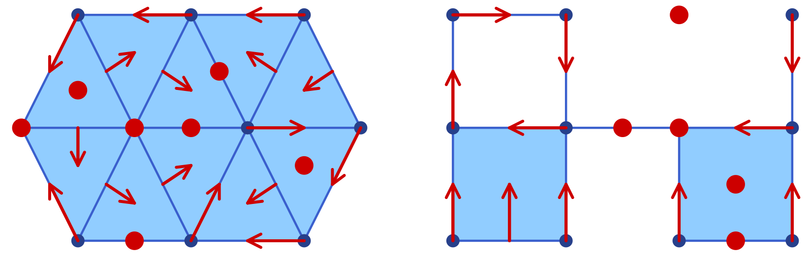
As a first example, the following commands are used to create the simplicial complex and associated Forman vector field shown in the left panel of the figure with the sample Forman vector field plots:
using Plots
using ConleyDynamics
sc, smvf = example_forman2d(euclidean=true)
sp = plot_simplicial(sc, mvf=smvf)
display(sp)For the cubical case, the proceeding is similar. In order to generate the right panel of this figure, we used the commands
using Plots
using ConleyDynamics
cubes = ["00.11", "01.01", "02.10", "11.10",
"11.01", "22.00", "20.11", "31.01"]
cc = create_cubical_complex(cubes, euclidean=true)
cmvf = [["01.00","01.01"], ["02.00","02.10"], ["12.00","11.01"],
["11.00","01.10"], ["00.00","00.01"], ["00.10","00.11"],
["10.00","10.01"], ["20.00","20.01"], ["32.00","31.01"],
["30.00","30.01"], ["31.00","21.10"]]
cp = plot_cubical(cc, mvf=cmvf)
display(cp)Note that the figure with the sample Forman vector field plots contains both plots side-by-side. This was achieved directly using the Plots.jl framework. One can combine both plots in a single one, change the resolution to dpi = 300, and then save the figure using the following commands:
pcombined = plot(sp, cp, layout=(1,2))
plot!(pcombined, dpi=300)
savefig(pcombined, "plots_forman.png")In the above examples, the vertices, edges, and two-dimensional cells are drawn separately using different shades of blue. In both functions, the keyword argument pdim::Vector{Bool} controls which dimensions of the simplicial or cubical complex are drawn. The three entries correspond to vertices (dimension 0), edges (dimension 1), and faces (dimension 2), respectively. For example, pdim = [false,true,true] suppresses vertices:
p = plot_cubical(create_cubical_rectangle(4, 3, euclidean=true),
pdim=[false,true,true])
display(p)Both plots in the figure with the sample Forman vector field plots were created using pdim = [true,true,true], which is also the default if the argument is not specified.
Plotting Morse Sets for Planar Dynamics
The functions plot_simplicial_morse and plot_cubical_morse are used to visualize Morse sets of multivector fields on planar simplicial or cubical complexes. In addition to an argument of type EuclideanComplex, they expect a CellSubsets argument which contains a list of locally closed sets, usually the Morse sets associated with a multivector field.
To keep the visualization simple, the vertices, edges, and faces in a Morse set are all colored with the same color. While by default all cells are highlighted, both functions accept the optional argument pdim::Vector{Bool}, which allows the user to select the dimensions that should be drawn. In the case of large complexes, the choice pdim = [false, false, true] is most appropriate, since then only the two-dimensional cells are highlighted.
The Morse plot functions color each Morse set in a distinct, automatically chosen color. By default only the explicitly listed Morse sets are rendered. Passing the optional argument addcritical = true additionally draws cells absent from any Morse set as implicit singletons in separate colors. Since this is mostly used when visualizing complete multivector fields in the above way, and since the focus of the functions plot_simplicial_morse and plot_cubical_morse is on plotting Morse sets, the default value of this optional argument is addcritical = false.
To demonstrate both functions, we return to an earlier example.
using Plots
using ConleyDynamics
function planarvf(x::Vector{Float64})
#
# Sample planar vector field with nontrivial Morse decomposition
#
x1, x2 = x
y1 = x1 * (1.0 - x1*x1 - 3.0*x2*x2)
y2 = x2 * (1.0 - 3.0*x1*x1 - x2*x2)
return [y1, y2]
end
sc = create_simplicial_delaunay(300, 300, 12, 30, euclidean=true);
sc = rescale_coords(sc, -1.5, 1.5);
svf = create_planar_mvf(sc, planarvf);
scm = connection_matrix(sc, svf);
pls = plot_simplicial_morse(sc, scm.morse);
display(pls)The above commands define a vector field in the plane, create a Delaunay triangulation of the region of interest, and then associate a multivector field to these choices. Finally, the connection matrix is computed, which gives the Morse sets in scm.morse. Note that the plot command only colors the Morse sets, but in randomly chosen colors. We would like to point out that all vertices, edges, and faces of the Morse sets are emphasized, see the left panel of the figure with the sample Morse plots. Moreover, the vertices and edges of the underlying simplicial complex are highlighted as well.
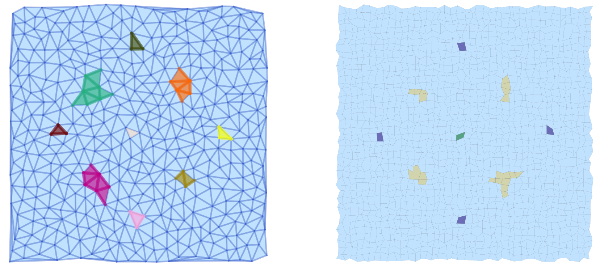
The same vector field can also be analyzed using a cubical complex with randomly perturbed vertex locations:
cc = create_cubical_rectangle(40, 40, randomize=0.4, euclidean=true);
cc = rescale_coords(cc, -1.5, 1.5);
cvf = create_planar_mvf(cc, planarvf);
ccm = connection_matrix(cc, cvf);
plc = plot_cubical_morse(cc, ccm.morse, ci=true, pdim=[false,false,true]);
display(plc)The resulting plot is shown in the right panel of the figure with the sample Morse plots. Note that due to the optional argument pdim, only the faces of the simplicial complex and the Morse sets are highlighted. In addition, this command passes the argument ci = true, which forces that the Morse set colors correspond to the Conley index of the respective Morse set as explained in the figure of the color palette for Conley indices.
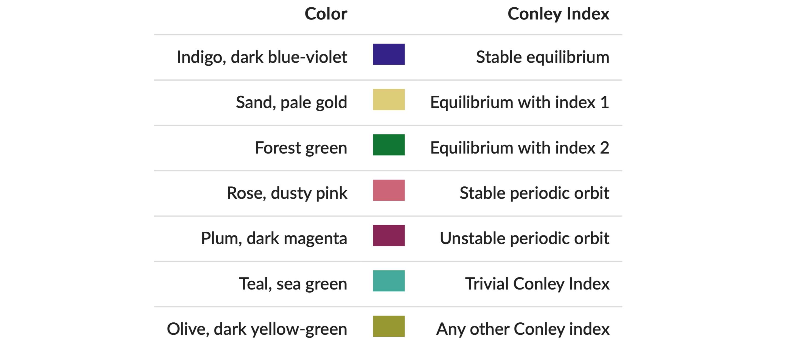
All of these colors are taken from Paul Tol's qualitative palette, which is designed for colorblind-friendly data visualization.
As before, both plots pls and plc where combined side-by-side, and then printed:
pcombined = plot(pls, plc, layout=(1,2))
plot!(pcombined, dpi=300)
savefig(pcombined, "plots_morse.png")We would like to point out that the argument ci=true can be passed to both plot_simplicial_morse and plot_cubical_morse.
Plotting Multivector Field Regions
While the above-introduced functions are suitable for the visualization of Forman vector fields and Morse sets, they often are not adequate in the setting of multivector fields, especially when the focus is on the depiction of individual multivectors. This is due to the fact that a multivector and its behavior relies crucially on which parts of its boundary are in the mouth. Thus, simply rendering the top-dimensional cell often buries the important information.
In view of this, ConleyDynamics.jl provides both plot_simplicial_mvf and plot_cubical_mvf. Both of these functions render each multivector as a single colored region. The region geometry is computed as an inflated convex hull of the cell barycenters, so adjacent multivectors are visually separated by a visible gap.
As a first example, consider the following code snippet:
using Plots
using ConleyDynamics
lc, mvf = example_julia_logo()
coords = [[0,0], [1,2], [2,0], [3,2]]
ec = lefschetz_to_euclidean(lc, coords)
p1 = plot_simplicial_mvf(ec, mvf)
p2 = plot_simplicial_mvf(ec, mvf, mvfalpha=0.6,
mvfcolor=["red", "blue", "green"])
pcombined12 = plot(p1, p2, layout=(1,2))
plot!(pcombined12, dpi=300)
savefig(pcombined12, "plots_mvf_vectors.png")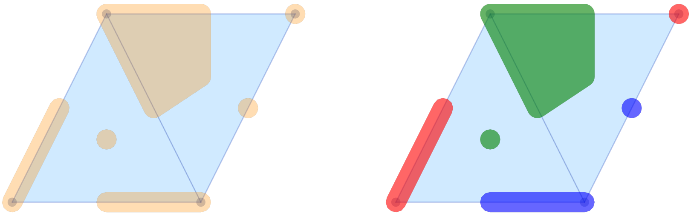
The left panel of the figure of the multivector field visualizations shows the multivectors from the logo example in the above-described form. In the default call, all multivectors are plotted in the same color and with high opacity. It is possible to change these choices, as the second panel demonstrates. The optional argument mvfalpha allows one to change the opacity, with values closer to 1 being more solid. In addition, the vector of strings mvfcolor can be used to specify different colors for the multivectors. As the multivectors are drawn, the function cycles through the provided colors.
While their main purpose is the visualization of complete multivector fields, the above two functions can, however, also be used for the depiction of Morse decompositions. For the logo example, this can be achieved as follows.
cm = connection_matrix(ec, mvf)
p3 = plot_simplicial_mvf(ec, cm.morse, mvfalpha=0.5,
tubefac=0.1)
p4 = plot_simplicial_mvf(ec, cm.morse,
mvfcolor=["red","purple","darkblue"],
mvfalpha=0.8)
pcombined34 = plot(p3, p4, layout=(1,2))
plot!(pcombined34, dpi=300)
savefig(pcombined34, "plots_mvf_morsesets.png")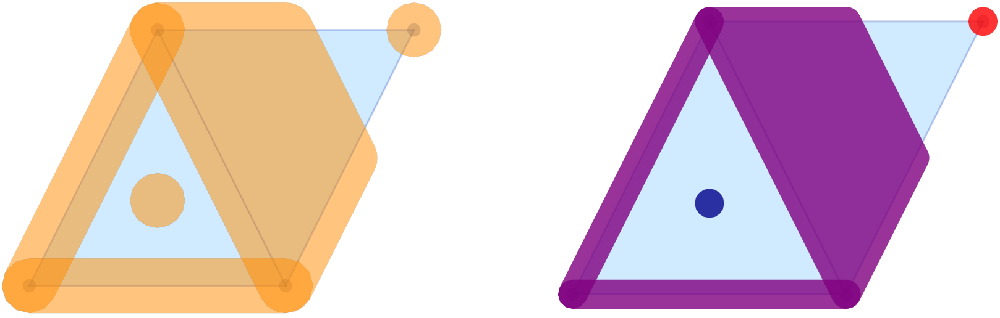
In this example, the Morse decomposition consists of two critical cells, as well as one large locally closed invariant set, which is shown in purple in the right panel of the figure of the multivector field Morse set visualizations. Note that the tubefac parameter controls the inflation radius as a fraction of the average edge length (default 0.05). As mentioned before, the mvfalpha parameter sets the fill opacity (default 0.3), and distinct colors can be assigned to individual Morse sets by passing a vector mvfcolor of color names.
Since the main application of the functions plot_simplicial_mvf and plot_cubical_mvf is the visualization of multivector fields, by default, cells absent from the multivector field are shown as implicit singleton regions. One can pass addcritical=false to suppress this and display only the explicitly listed multivectors. This is particularly useful for displaying Morse sets.
The treatment of multivector fields on cubical complexes is completely analogous, as the following example demonstrates.
using Plots
using ConleyDynamics
cubes = ["00.11", "01.01", "02.10", "11.10",
"11.01", "22.00", "20.11", "31.01"]
cc = create_cubical_complex(cubes, euclidean=true)
mvf = [["01.00","01.01"], ["02.00","02.10"], ["12.00","11.01"],
["11.00","01.10"], ["00.00","00.01"], ["00.10","00.11"],
["10.00","10.01"], ["21.00","11.10"], ["32.00","31.01"],
["31.00","21.10"], ["20.11","20.01","30.01","20.10"]]
cm = connection_matrix(cc, mvf)
c1 = plot_cubical_mvf(cc, mvf, ci=true,
pdim=[false,true,true])
display(c1)
c2 = plot_cubical_mvf(cc, cm.morse, addcritical=false,
ci=true, mvfalpha=0.7,
pdim=[false,true,true])
display(c2)
pc12 = plot(c1, c2, layout=(1,2))
plot!(pc12, dpi=300)
savefig(pc12, "plots_mvf_cubical.png")We would like to emphasize that in this case it is essential to pass the optional argument addcritical = false in the Morse set visualization, since only the singletons listed in cm.morse are actually Morse sets. In fact, one can see that in this example there are five Morse sets, three of which are singletons.
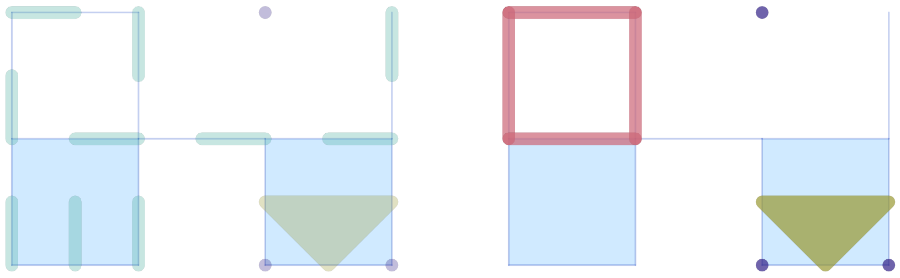
As with the Morse plot functions, passing ci=true to plot_simplicial_mvf or plot_cubical_mvf colors each multivector (or Morse set) by its Conley index instead of using the mvfcolor palette.
Plotting a Single Multivector
The plot_simplicial_mv and plot_cubical_mv functions highlight a single multivector on the complex background:
using Plots
using ConleyDynamics
lc, mvf = example_forman2d(euclidean=true)
cm = connection_matrix(lc, mvf)
msmax = argmax(length.(cm.morse))
mv = cm.morse[msmax] # largest Morse set
p1 = plot_simplicial_mv(lc, mv, mvfalpha=0.5)
title!(p1, "periodic orbit")
display(p1)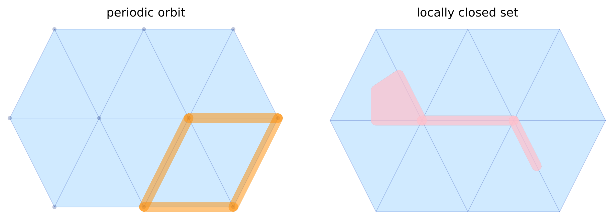
Cell labels (strings) are also accepted in place of integer indices:
lcset = ["ADE", "AE", "DE", "E", "EF", "FJ", "F"]
p2 = plot_simplicial_mv(lc, lcset,
mvfcolor="pink", mvfalpha=0.7,
pdim=[false,true,true])
title!(p2, "locally closed set")
display(p2)
pcombined12 = plot(p1, p2, layout=(1,2))
plot!(pcombined12, dpi=300)
savefig(pcombined12, "plots_single_mv.png")Three-Dimensional Plotting with Makie
Complexes embedded in three dimensions, such as the tetrahedral meshes described in the chapter Three-Dimensional Meshes, cubical complexes created by create_cubical_box, or triangulated surfaces, are visualized with the Makie.jl plotting ecosystem. Makie supports interactive three-dimensional graphics with depth ordering and transparency, which the planar backends above cannot provide. The table below lists the available functions:
| Function | Description |
|---|---|
plot_simplicial3d | Simplicial complex in three dimensions |
plot_cubical3d | Cubical complex in three dimensions |
plot_simplicial3d_morse | Simplicial complex with colored Morse sets |
plot_cubical3d_morse | Cubical complex with colored Morse sets |
plot_simplicial3d_mv | Single multivector on a simplicial complex |
plot_cubical3d_mv | Single multivector on a cubical complex |
plot_simplicial3d_mvf | Multivector field on a simplicial complex |
plot_cubical3d_mvf | Multivector field on a cubical complex |
plot_cells3d! | Add an arbitrary cell subset to a plot |
Every function except plot_cells3d! comes in two variants. The plain variant, such as plot_simplicial3d, creates a new figure and returns it. The variant with a trailing exclamation mark, such as plot_simplicial3d!, draws into an existing Makie axis, which allows several plots to be combined in one figure or one axis. The simplicial and cubical functions accept the same arguments. They differ only in the way two-dimensional cells are drawn: Triangles are drawn as they are, while squares are split into two triangles.
Makie Backends
Makie itself only describes plots. To display or save them, one of its backends has to be loaded:
- GLMakie opens interactive windows, in which plots can be rotated with the mouse (left button), moved (right button), and zoomed (scroll wheel). It uses OpenGL, and it handles overlapping transparent surfaces much better than CairoMakie, since it blends them independently of the drawing order. This is the recommended backend for exploring three-dimensional complexes.
- CairoMakie creates static, publication-quality images in the PNG, PDF, and SVG formats. It does not need a graphics card, so it also works on remote servers. All figures in this section were created with CairoMakie.
- WGLMakie renders interactive plots in a web browser or a Jupyter notebook.
All three backends load Makie.jl, which is a weak dependency of ConleyDynamics.jl, and the plotting functions become available as soon as one of them has been loaded:
using GLMakie # or CairoMakie, or WGLMakie
using ConleyDynamicsIn the REPL, a figure fig returned by one of the plotting functions is displayed automatically. In a script, it can be displayed with display(fig). With GLMakie, display(GLMakie.Screen(), fig) opens an additional window, so that several figures can be compared side by side. Figures are saved with save, for example
save("complex.png", fig; px_per_unit=2)where px_per_unit scales the resolution of the image. With GLMakie, the saved image shows the current view, after any interactive rotation. Both GLMakie and CairoMakie can be loaded in the same session, and CairoMakie.activate!() and GLMakie.activate!() switch between them.
Since only the boundary surface of the tetrahedra is drawn by default, even large tetrahedral meshes can be plotted quickly. For example, a TetGen mesh of a box with about 950,000 cells has 13,500 boundary triangles, and plotting it and saving the result as a PNG file with CairoMakie takes about half a second. Plots which draw many more triangles, such as those with hull_only=false or multivector field plots of large complexes, are much slower, in particular with CairoMakie, and the resulting PDF and SVG files can become very large. PNG files are therefore recommended for large complexes.
Plotting a Complex
The function plot_simplicial3d draws a complex embedded in three dimensions. For a tetrahedral mesh, it shows the boundary surface of the union of all tetrahedra, semi-transparent, together with its edges. The following commands create a mesh of a box with tetgen_mesh and plot it:
using TetGen
using GLMakie
using ConleyDynamics
ec = tetgen_to_simplicial(tetgen_mesh(tetgen_domain_box([-1.5,-1,-1], [1.5,1,1]);
maxvolume=0.05))
fig = plot_simplicial3d(ec)The result is shown in the left panel of the figure with three plots of a tetrahedral mesh. The appearance can be changed with a number of optional arguments:
pdim::Vector{Bool}: which cell dimensions are drawn. The four entries correspond to vertices, edges, two-dimensional cells which are not faces of tetrahedra, and the faces of tetrahedra. The default[false,true,true,true]omits the vertices, which are drawn as small spheres if the first entry istrue. Note that, unlike for the planar plotting functions,pdimhas four entries, and a vector of a different length raises anArgumentError.hull_only::Bool: iftrue(default), only the boundary surface of the tetrahedra is drawn. Iffalse, all faces and edges are drawn, including the ones in the interior of the mesh.clip: a pair(n, offset)which removes part of the complex, see the next section.alpha: the opacity of the faces, between0(invisible) and1(opaque). The default is0.3.facecolor,edgecolor,vertexcolor: the colors of the cells, which can be given in any form that Makie accepts, such as:gold,"gold", orcolorant"gold".linewidthandlinealpha: the width and the opacity of the edges.markersize: the radius of the vertex spheres, in the units of the coordinates. By default, it is a fraction of the typical edge length of the complex.
The plain variants additionally accept the following arguments, which determine the figure:
axis: the type of the axis. The default:scenecreates anLScene, a plain three-dimensional scene without axis decorations, which can be freely rotated. The value:axis3creates anAxis3, which has ticks, labels, and a fixed vertical direction, and which uses equal scales on all three axes.size: the size of the figure in pixels, by default(800,600).
The middle and right panels of the same figure illustrate some of these options:
fig2 = plot_simplicial3d(ec; clip=([-1,-1,-1], 0.0), pdim=[true,true,true,true],
alpha=0.6)
fig3 = plot_simplicial3d(ec; hull_only=false, alpha=0.05,
facecolor=:gold, edgecolor=:gray40, linewidth=0.5)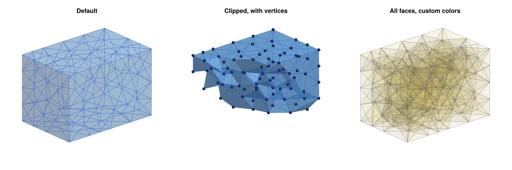
With hull_only=false, all interior faces and edges are drawn, which gives an impression of the density of the mesh, but which is only readable for small meshes and small values of alpha.
If a complex is not embedded in three dimensions, the plotting functions raise an ArgumentError. Planar complexes should be plotted with the functions in the previous sections. Note also that all two-dimensional complexes in three dimensions, such as triangulated surfaces, can be plotted in the same way. Their triangles are drawn individually, see the torus in Highlighting Cell Subsets below.
Clipping
Most interesting features of a tetrahedral mesh, such as Morse sets or refined regions, are hidden in its interior. The optional argument clip=(n, offset) removes all tetrahedra whose centroid c, i.e., the average of the coordinates of their four vertices, lies on the far side of the plane n⋅c = offset, which means that n⋅c > offset. Here n is a normal vector of the plane, which points towards the removed part, and n⋅c denotes the dot product. More generally, the same rule applies to all cells which are not faces of other cells, such as the triangles of a triangulated surface. All other cells are kept if and only if they are faces of a kept cell, so that the visible part is again a closed subcomplex, and its boundary surface is drawn as usual. For example,
clip=([0,-1,0], 0.0)keeps the halfy >= 0of the complex,clip=([0,0,1], 0.5)keeps the part withz <= 0.5, andclip=([-1,-1,-1], 0.0)cuts the complex diagonally, as in the middle panel of the figure with three plots of a tetrahedral mesh.
Since whole tetrahedra are removed, the cut surface is jagged rather than planar, and it shows the actual tetrahedra at the cut. The cut surface faces the viewer if the normal n points towards the viewer. The default view of Makie looks at the complex slightly from above and from the side of negative x and y. Therefore, the normals [0,-1,0], [-1,0,0], [0,0,1], and [-1,-1,-1] show the cut surface, while [0,1,0] turns it away from the viewer. The clip argument is accepted by all plotting functions, and it applies to the background complex as well as to the highlighted cell subsets. To show the same section in several overlaid plots, pass the same clip value to each of them.
Combining Plots
The variants with an exclamation mark draw into an existing axis, which is passed as the first argument. This makes it possible to arrange several plots in one figure, as in all the figures of this section, or to overlay several plots in one axis. The figure with three plots of a tetrahedral mesh was created with the following commands:
using CairoMakie
fig = Figure(size=(1500,500))
ax1 = Axis3(fig[1,1]; aspect=:data, title="Default")
plot_simplicial3d!(ax1, ec)
ax2 = Axis3(fig[1,2]; aspect=:data, title="Clipped, with vertices")
plot_simplicial3d!(ax2, ec; clip=([-1,-1,-1], 0.0), pdim=[true,true,true,true],
alpha=0.6)
ax3 = Axis3(fig[1,3]; aspect=:data, title="All faces, custom colors")
plot_simplicial3d!(ax3, ec; hull_only=false, alpha=0.05,
facecolor=:gold, edgecolor=:gray40, linewidth=0.5)
for ax in (ax1, ax2, ax3)
hidedecorations!(ax)
hidespines!(ax)
end
save("makie3d_basic.png", fig; px_per_unit=1.5)In Makie, a Figure is the window or image, which contains a grid of axes. The expression fig[1,2] refers to the cell in the first row and the second column of this grid, and Axis3(fig[1,2]) places a three-dimensional axis there. The argument title sets the title of an axis. The argument aspect=:data gives all three axes the same scale, which is essential for judging the shape of tetrahedra, and hidedecorations! and hidespines! remove ticks, labels, and the bounding box. Instead of an Axis3, one can also use LScene(fig[1,1]; show_axis=false), which is what the plain variants do by default. An LScene can be rotated freely in GLMakie, while an Axis3 keeps the z-axis vertical. The viewing direction of an Axis3 is determined by its attributes azimuth and elevation, in radians, which can be passed to the constructor or changed later, for example with ax1.azimuth = 0.3*pi.
The plain variants return the figure, and the axis they created can be retrieved with content(fig[1,1]). This allows the plain variants to be combined with the other functions as well:
fig = plot_simplicial3d(ec; axis=:axis3)
ax = content(fig[1,1])
plot_cells3d!(ax, ec, [1, 2, 3]; color=:red)Highlighting Cell Subsets
The function plot_cells3d! draws an arbitrary collection of cells, given by their indices or labels, into an existing axis. It is the basic building block of all the plotting functions of this section, and it is the tool of choice for constraint surfaces, exit sets, or the result of any computation that returns cells. Cells are drawn according to their dimension:
- Three-dimensional cells are drawn by the boundary surface of their union (or by all their faces if
hull_only=false). - Two-dimensional cells are drawn as triangles or squares, unless they are faces of three-dimensional cells in the collection.
- Edges are drawn as thick lines, unless they are faces of higher-dimensional cells in the collection.
- Vertices are drawn as spheres, unless they are faces of higher-dimensional cells in the collection.
The optional arguments are color (default :darkorange), alpha (default 1.0), pdim (by default all dimensions are drawn), hull_only, clip, linewidth (default 4), and markersize. As an example, the following commands plot a triangulated torus surface and three cell subsets on it: the edges of a meridian circle, a band of triangles, and the first three cells of the complex, which are vertices selected by their labels:
Vt, Tt = trisurface_torus([0,0,0], 2.0, 0.7, 36, 12)
ecs = tetmesh_to_euclidean(Vt, Tt)
meridian = [k for k in 1:ecs.ncells if ecs.dimensions[k] == 1 &&
all(abs(c[2]) < 1e-12 && c[1] > 0 for c in ecs.coords[k])]
band = [k for k in 1:ecs.ncells if ecs.dimensions[k] == 2 &&
all(c[1] < -0.5 && abs(c[2]) < 1.2 for c in ecs.coords[k])]
fig = Figure(size=(1200,500))
ax1 = Axis3(fig[1,1]; aspect=:data, title="Torus surface")
plot_simplicial3d!(ax1, ecs; alpha=0.5)
ax2 = Axis3(fig[1,2]; aspect=:data, title="Added cell subsets")
plot_simplicial3d!(ax2, ecs; alpha=0.15)
plot_cells3d!(ax2, ecs, meridian; color=:red)
plot_cells3d!(ax2, ecs, band; color=:darkorange, alpha=0.9)
plot_cells3d!(ax2, ecs, ecs.labels[1:3]; color=:black)The cell subsets are selected geometrically, using the vertex coordinates which every EuclideanComplex stores in its field coords. For each cell, ecs.coords[k] is the vector of the coordinates of its vertices. The two panels are shown in the figure of the torus surface with highlighted cell subsets.
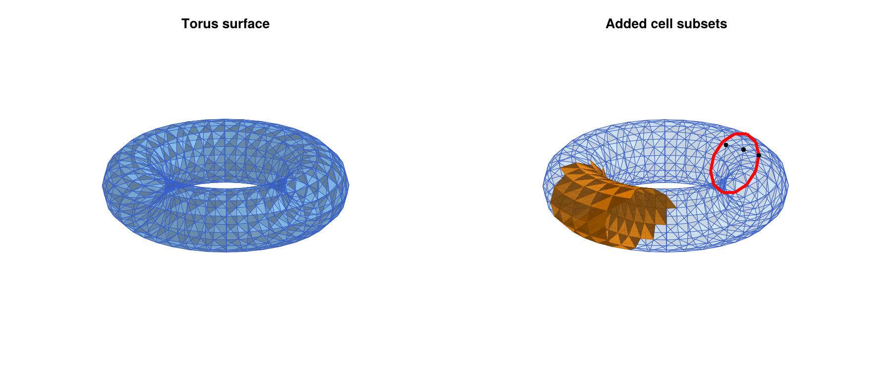
Further examples of plot_cells3d! can be found in the chapter Three-Dimensional Meshes, where it is used to show the constraint surfaces and curves found by tetgen_marker_cells and gmsh_marker_cells.
Plotting Morse Sets
The functions plot_simplicial3d_morse and plot_cubical3d_morse draw the complex faintly in the background, and every Morse set in its own color on top of it. Each Morse set is drawn as described for plot_cells3d! above. The following example uses the vector field from the documentation of create_spatial_mvf:
function samplevf(x::Vector{Float64})
x1, x2, x3 = x
return [x1 * (1.0 - x1*x1), -x2, -x3]
end
mvf = create_spatial_mvf(ec, samplevf)
ms = morse_sets(ec, mvf)
[conley_index(ec, m) for m in ms] # [[1,0,0,0], [1,0,0,0], [0,1,0,0]]
fig1 = plot_simplicial3d_morse(ec, ms)
fig2 = plot_simplicial3d_morse(ec, ms; ci=true)
fig3 = plot_simplicial3d_morse(ec, ms; colors=[:purple, :gold, :seagreen],
alpha=0.5, bgalpha=0.02,
pdim=[false,false,false,true])The three plots are shown in the figure of the Morse sets of a vector field on a tetrahedral mesh. On this coarse mesh, each Morse set contains a single tetrahedron. For the two attractors, the Morse set consists of this tetrahedron and all its faces, while the Morse set of the saddle contains only six of its fourteen faces.
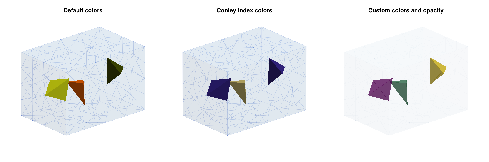
The optional arguments are:
ci::Bool: iftrue, the Morse sets are colored by their Conley index, with the same colors as in the planar plots, see the color palette for Conley indices above. In addition, the indices[0,0,0,1]and[0,0,1,1]of dimension three have their own colors (purple and light blue), and all remaining indices are shown in olive.colors: a vector of colors for the Morse sets, which is cycled through if there are more Morse sets than colors. By default, the same distinguishable colors as in the planar plots are used.addcritical::Bool: iftrue, all cells which do not belong to any of the given sets are added as singleton sets. The default isfalse.alpha: the opacity of the Morse sets, by default0.9.bgalpha: the opacity of the background faces, by default0.08.pdim: the cell dimensions which are drawn in the background. In the third panel,pdim=[false,false,false,true]suppresses the edges of the background.hull_only,clip,linewidth, andmarkersize, as before. Here,linewidth(default4) refers to the edges of the Morse sets.
The Morse sets can be given as cell indices or as labels, i.e., as a Vector{Vector{Int}} or a Vector{Vector{String}}, and in particular the field morse of the result of connection_matrix can be passed directly. The functions are not restricted to Morse sets: Any collection of cell subsets can be plotted, such as isolated invariant sets or isolating blocks.
Plotting Multivectors and Multivector Fields
The functions plot_simplicial3d_mv and plot_cubical3d_mv highlight a single multivector, or any other single cell subset, on the faint background complex. The color is set with the optional argument color, and all other optional arguments are as for the Morse set plots. The functions plot_simplicial3d_mvf and plot_cubical3d_mvf draw a complete multivector field. Every multivector with at least two cells is drawn in its own color, and singletons are omitted. The colors are chosen by a greedy coloring, so that adjacent multivectors receive different colors whenever possible. Since the multivectors cover the whole complex, these plots are mostly useful together with clipping:
mvlargest = mvf[argmax(length.(mvf))]
length(mvf), length(mvlargest) # (325, 38)
fig1 = plot_simplicial3d_mv(ec, mvlargest)
fig2 = plot_simplicial3d_mvf(ec, mvf; clip=([0,0,1], 0.0))
fig3 = plot_simplicial3d_mvf(ec, mvf; ci=true, clip=([0,0,1], 0.0))The three plots are shown in the figure of the multivector and the multivector field on a tetrahedral mesh.
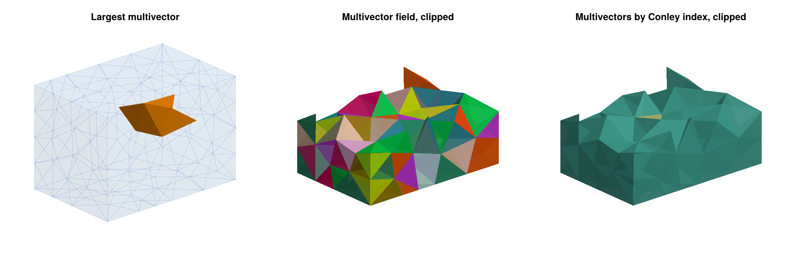
The optional arguments of the multivector field plots are the same as for the Morse set plots, with the following differences. The argument colors specifies the palette for the greedy coloring, which by default consists of twelve light colors. The default opacity is alpha=0.8. With ci=true, every multivector is colored by its Conley index. Since most multivectors of a typical multivector field are regular, i.e., have trivial Conley index, such a plot is dominated by one color, and the few critical multivectors stand out, as the small sand-colored multivector in the right panel of the figure of the multivector and the multivector field on a tetrahedral mesh shows. With addcritical=true, the singleton multivectors and all cells that are not covered by the multivector field are drawn as well.
Plotting Cubical Complexes
The cubical functions work in exactly the same way, and they accept the same optional arguments. Cubical complexes are usually created with create_cubical_box, whose integer vertex coordinates are then mapped to the region of interest with convert_spatial_coordinates. The following commands plot a small cubical complex with its vertices, and the multivector field of the sample vector field from above, clipped at the plane z = 0:
lc, coords = create_cubical_box(6, 4, 4)
ecq = lefschetz_to_euclidean(lc, convert_spatial_coordinates(coords,
[-1.5,-1,-1], [1.5,1,1]))
mvfq = create_spatial_mvf(ecq, samplevf)
fig1 = plot_cubical3d(ecq; pdim=[true,true,true,true])
fig2 = plot_cubical3d_mvf(ecq, mvfq; clip=([0,0,1], 0.0))The squares of a cubical complex are drawn as two triangles each. The diagonal along which a square is split is not drawn, since it is not an edge of the complex, but it can be visible in the shading of semi-transparent squares. For a larger example, we return to the three-dimensional projection of the Allen-Cahn equation discussed in the section Analysis of a Spatial System:
function allencahn3d(x::Vector{Float64})
lambda = 3.0 * pi
c = lambda / pi
x1, x2, x3 = x
y1 = (lambda-1)*x1 - 1.5*c * (x1*x1*x1-x1*x1*x3+x2*x2*x3+2*x1*(x2*x2+x3*x3))
y2 = (lambda-4)*x2 - 1.5*c * x2 * (2*x1*x1+x2*x2+2*x1*x3+2*x3*x3)
y3 = (lambda-9)*x3 + 0.5*c * (x1*(x1*x1-3*x2*x2)-3*x3*(2*x1*x1+2*x2*x2+x3*x3))
return [y1, y2, y3]
end
bmax = [1.8, 1.5, 1.0]
lca, ca = create_cubical_box(25, 25, 25)
eca = lefschetz_to_euclidean(lca, convert_spatial_coordinates(ca, -bmax, bmax))
mvfa = create_spatial_mvf(eca, allencahn3d)
msa = morse_sets(eca, mvfa)
[conley_index(eca, m) for m in msa]
# [[1,0,0,0], [1,0,0,0], [0,1,0,0], [0,1,0,0], [0,0,1,0], [0,0,1,0], [0,0,0,1]]
fig3 = plot_cubical3d_morse(eca, msa; ci=true)The Morse decomposition consists of seven Morse sets: two attracting equilibria, two equilibria with one-dimensional unstable manifolds, two equilibria with two-dimensional unstable manifolds, and the trivial equilibrium, whose unstable manifold is three-dimensional. The three plots are shown in the figure of the cubical complexes in three dimensions. In the right panel, the colors of the Conley indices immediately identify the index of each equilibrium: the attractors are dark blue, the Morse sets with index [0,1,0,0] are sand-colored, the ones with index [0,0,1,0] are green, and the trivial equilibrium is purple. Note that one of the two green Morse sets is hidden behind a sand-colored one in this view. In such cases, an interactive GLMakie window, or the clip argument, helps to see all Morse sets.
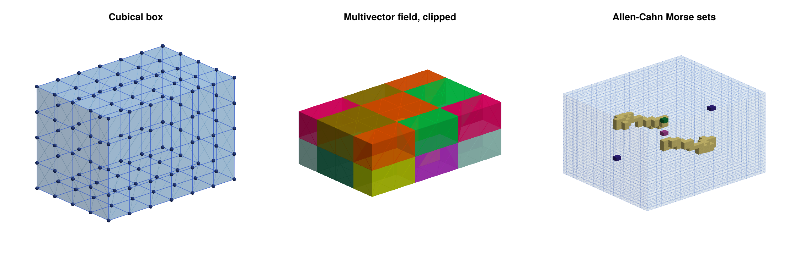
Practical Tips
The following remarks summarize the experience gained with the figures in this manual:
- Transparency. CairoMakie sorts the triangles of a single plot object by depth, but it draws different plot objects in the order in which they were created. All colored triangles of a Morse set or multivector field plot are therefore combined into one plot object, which is rendered correctly. When several plots are overlaid with
plot_cells3d!, draw the inner objects first, and use opaque colors for objects which should hide others. GLMakie uses order-independent transparency, which handles such overlays much better, although it is also only an approximation. - Lines and surfaces. Edges and curves remain clearly visible through semi-transparent surfaces, and with CairoMakie, lines which are drawn after a surface even appear in front of opaque parts of it. This is usually desirable for constraint curves, but it can be confusing for the edges of large complexes. In such cases, reduce
linealphaor omit the edges withpdim. - Large complexes. For tetrahedral meshes with hundreds of thousands of tetrahedra, the default plot is still fast, since only the boundary surface is drawn. Avoid
hull_only=falseand vertex spheres for such meshes, and use clipping to look inside. Multivector field plots are only readable for small complexes. - Reproducible views. The default view of an
LScenedepends on the bounding box of the plot. For figures which are to be published, anAxis3with explicitly setazimuthandelevationgives reproducible views.